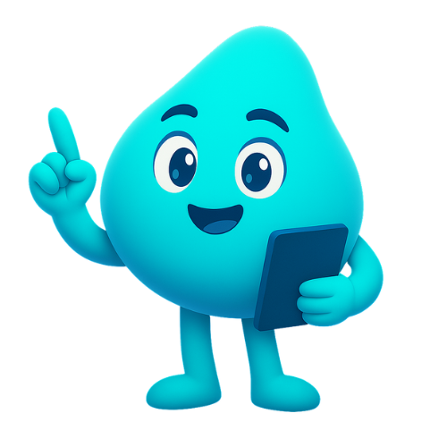

Dozi Nedir? İlaç Takip Uygulamanızla Tanışın
Dozi, ilaçlarınızı takip etmenizi kolaylaştıran akıllı bir mobil uygulamadır. Yapay zeka destekli hatırlatmalar ve aile takibi özellikleriyle tanışın.
İlaç takibi, uygulama özellikleri ve sağlıklı yaşam ipuçları hakkında yazılar.
Dozi, ilaçlarınızı takip etmenizi kolaylaştıran akıllı bir mobil uygulamadır. Yapay zeka destekli hatırlatmalar ve aile takibi özellikleriyle tanışın.

Dozi'nin Badi sistemi ile sevdiklerinizin ilaç alıp almadığını takip edin. Artık "İlacını içtin mi?" diye sormak zorunda değilsiniz.
Dozi'nin yapay zeka destekli asistanı ile ilaç takibiniz hakkında sorular sorun, öneriler alın ve sağlık rutininizi geliştirin.

Dozi'nin stok takibi özelliği ile ilaçlarınız bitmeden uyarı alın. Eczaneye son dakika koşturmalarına son!